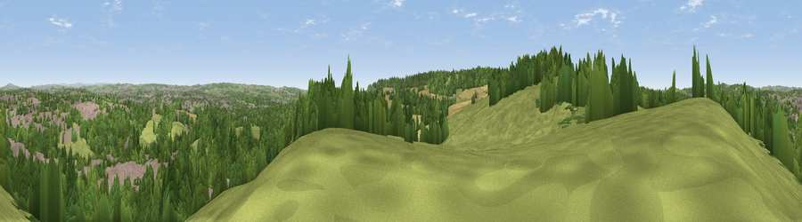

Viewpoint near Beech
#23438 in England · top 32% of its area beats it · near BeechWhere it is
The exact computed spot (SJ 84625 41725). Click the marker for map links.
The view, rendered

A 360° render of this exact spot computed from the terrain model, tree cover and land cover — summer colours, afternoon light, calibrated against photographs of famous viewpoints. Real trees, hedges and buildings will differ in detail.
The panorama
Grey silhouette: terrain skyline in each direction (720 bearings, Earth curvature and refraction included). Dashed green: skyline with trees (+15 m) and buildings (+8 m) as obstacles. Blue strip: how far the ground is visible on each bearing.
Where the view opens
Wedge length = distance to the farthest visible ground on that bearing (vegetation-aware). Rings at 10, 25 and 50 km.
What fills the view
40% woodland · 33% grassland · 19% built-up · 7% cropland
Angular shares of the visible panorama (visual magnitude), not map area. Landscape diversity 0.54 (0–1 Shannon).
Key numbers
More beautiful places nearby
The staircase of upgrades: each row has a higher view potential than everything closer. Driving times are estimates from straight-line distance, calibrated against real road routing — check an actual route before setting out.
| Place | Direction | Drive | Score |
|---|---|---|---|
| Viewpoint near Whitmore | WSW · 0 km | ~2 min | 55.0 |
| Hanchurch Hills | SSW · 2 km | ~5 min | 59.1 |
| Viewpoint near Beech | S · 2 km | ~6 min | 61.8 |
| Viewpoint near Beech | S · 3 km | ~7 min | 63.7 |
| Viewpoint near Madeley Heath | NW · 8 km | ~15 min | 65.4 |
| Viewpoint near Madeley | WNW · 9 km | ~17 min | 66.7 |
| Bignall Hill | NNW · 10 km | ~19 min | 75.2 |
| Viewpoint near Mow Cop | N · 16 km | ~28 min | 80.2 |
52.97266, -2.23040 · source: screening · position refined by local search. Computed location — check access rights before visiting.